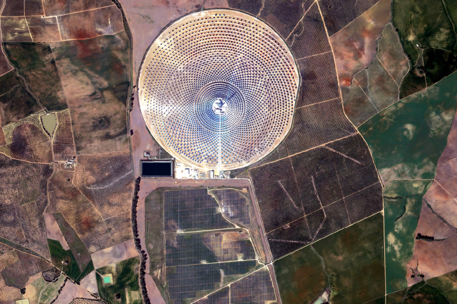
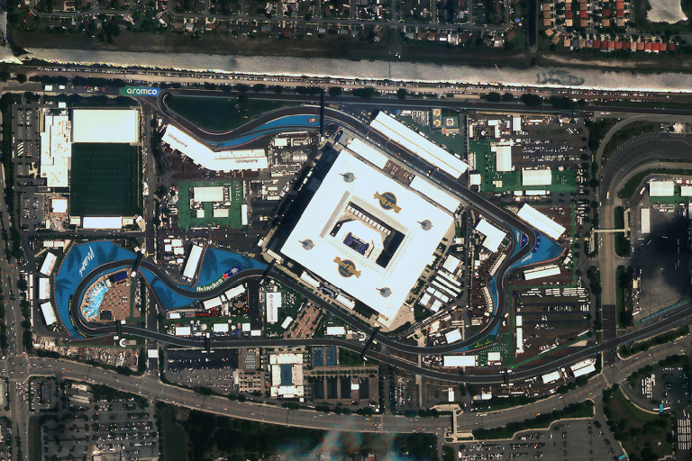
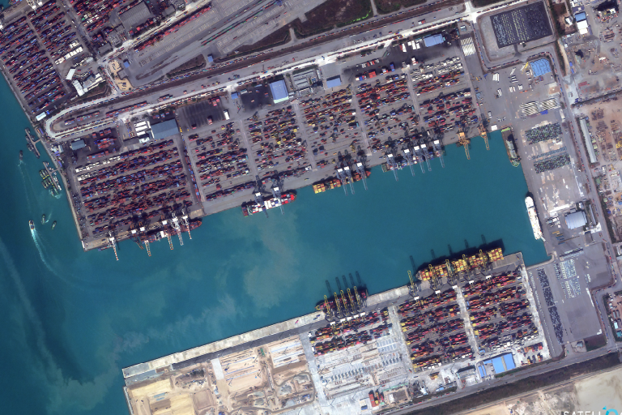
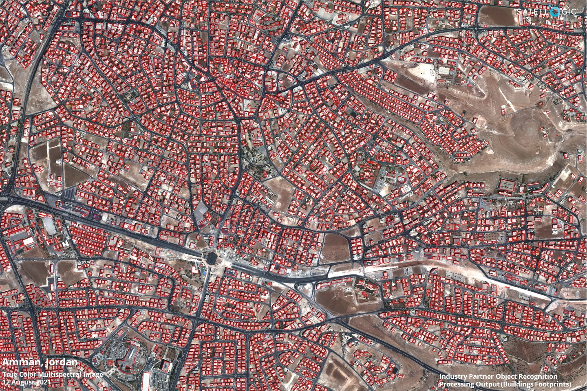
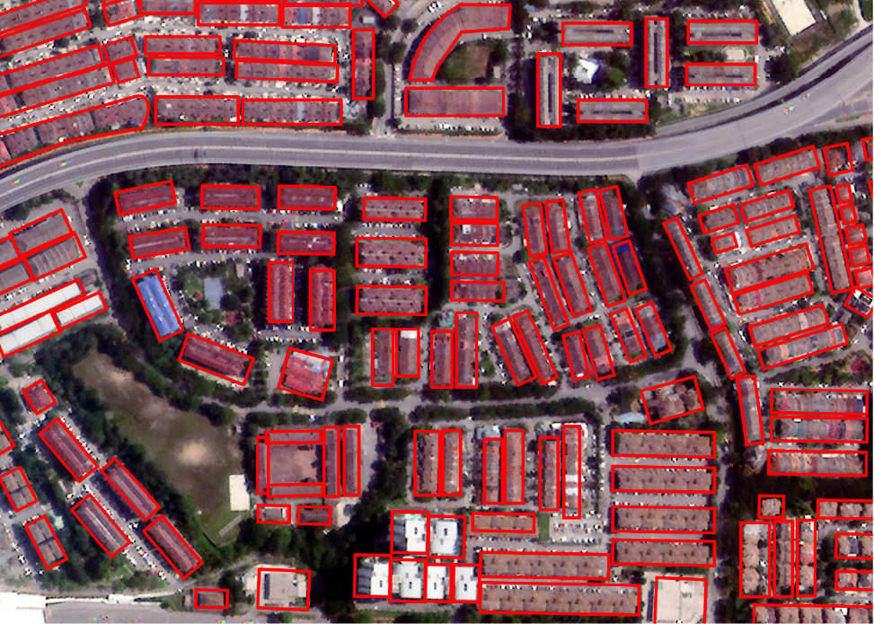
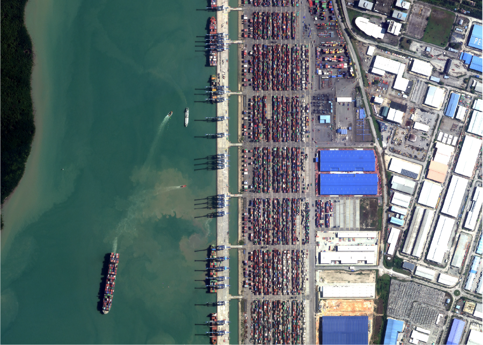
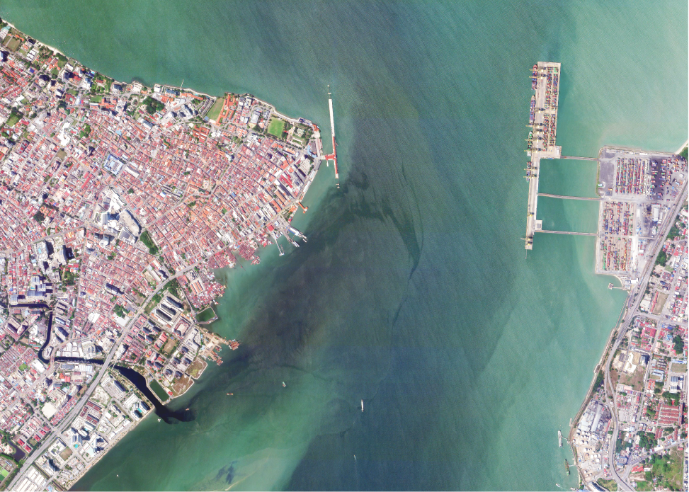

UZMASAT-1 APPLICATIONS
URBAN PLANNING & DEVELOPMENT
Consult Me Your Solutions Get Your Free Trial NowLeveraging geospatial analytics and satellite imagery, our infrastructure and urban planning solutions are set to provide valuable insights for sustainable and efficient development.
By understanding the unique characteristics of your urban environment, we can optimise infrastructure planning, asset management, and urban renewal.




Transformative Role of Satellite-Based Remote Sensing in Urban Monitoring
Satellite-based remote sensing plays a transformative role in urban monitoring by providing critical data to support smart city initiatives, low-carbon goals, and green, sustainable urban development.

Urban Sprawl, Green Spaces, and Heat Islands Monitoring
With high-resolution satellite imagery, cities can track urban sprawl, monitor green spaces, and analyze heat islands, all of which inform urban planning for better resource allocation and environmental impact reduction.
Data-Driven Approaches for Smart Cities and Low-Carbon Development
For smart city projects, remote sensing data enables efficient management of energy, waste, and transportation systems by offering insights into traffic patterns, pollution levels, and infrastructure health.
By integrating these insights, cities can work towards becoming low-carbon and resilient, using data-driven approaches to reduce emissions, optimize land use, and develop green spaces that contribute to improved air quality and biodiversity.
Urban .GAI
Leveraging Satellite Technology for Sustainable and Smart Urban Development
Build smarter, more sustainable cities with Urban.GAI, Geospatial AI’s advanced satellite-based infrastructure and urban planning solutions, harnessing the power of high-resolution remote sensing to drive smarter, more sustainable city growth.

Urban Planning and Development
- Optimal site selection
- Urban renewal
- Transportation Planning

Asset Management
- Asset condition assessment

Risk Assessment and Mitigation
- Geological hazard assessment
- Emergency Response planning